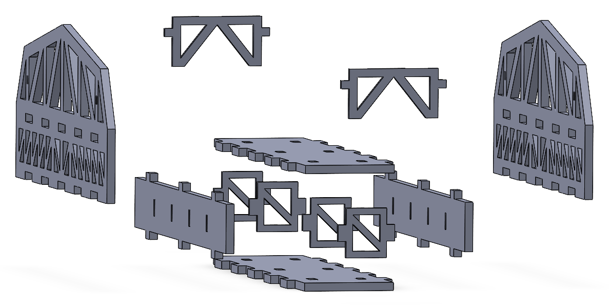
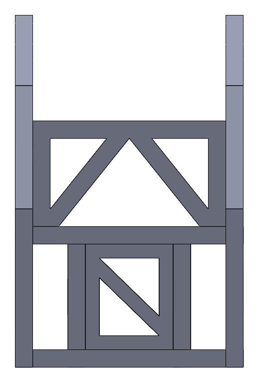

← All work / Project 01
ES 120 Bridge Competition · May 2026 · 1st place
Acrylic Truss Bridge
A laser-cut acrylic bridge held together with interlocking tabs and slots. It won the competition on strength-to-weight ratio.

01 / The brief
Strongest bridge per gram wins.
Each bridge was loaded in an Instron until it broke or sagged two inches. The score was the peak load divided by the bridge's own weight, so every extra gram of acrylic had to earn its place.
The rules were strict. All teams got the same ME Lab materials, and parts could only be made by hand or on the laser cutter. No metal fasteners were allowed, and glue could only help with assembly, never carry load. A 2" × 4" space had to stay open down the middle so the test car could be lowered onto the deck.
02 / The design
Triangles for strength, tabs instead of glue.
Two side trusses carry the load. Triangular cutouts take out acrylic wherever it isn't doing structural work, which keeps the weight down. A deck, beams and X-braced inserts tie the trusses together across the width.
Since glue couldn't be structural, the joints had to hold on their own. Every part locks into its neighbors with tabs and slots cut right into the profiles, so the geometry carries the load and the glue only holds pieces in place during assembly.


03 / CAD to cut file
From SolidWorks to the laser cutter.
Once the assembly was final, we laid the flat parts out on two sheets in SolidWorks and exported them as DXF files for the laser cutter. Nesting the parts tightly saved acrylic. Cutting the tabs and slots in the same pass as the outlines meant every joint came out lined up with the model.
- TrussesThe two side walls, with triangular cutouts and slots for the deck and inserts.
- Deck + beamsLong strips that tab into the trusses and form the driving surface.
- InsertsX-braced squares that hold the trusses square across the width.
- Top bracesTie the tops of the trusses together above the car's opening.
04 / What I owned
Most of the model, and most of the build.
- CADModeled most of the parts and the assembly in SolidWorks, including the tab-and-slot joints.
- Laser cuttingRan part of the cutting from the DXF layouts.
- BuildDid most of the assembly, fitting the cut parts together into the finished bridge.
We tested the bridge in the Instron against the rest of the class and took first place.